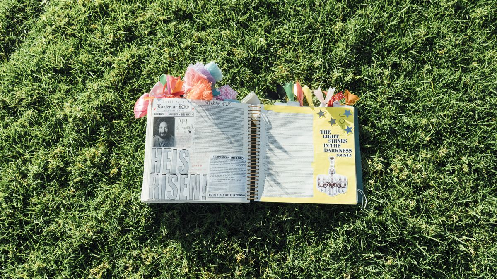
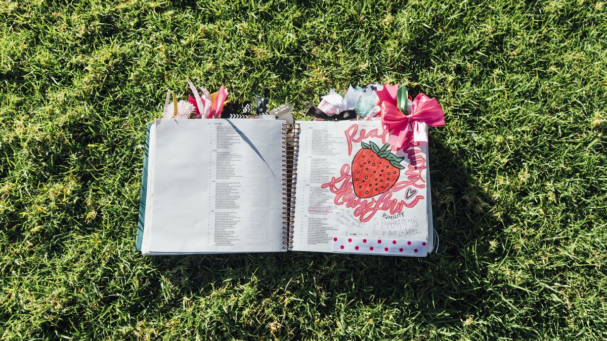

Embajadoras
Las que llevan esto a su ciudad.
Existe un grupo de embajadoras que ya está recibiendo información y materiales. El programa formal está en construcción.

El movimiento
Mujeres que abren la Biblia, la marcan con sus manos y ya no la sueltan.



Manifiesto
Abrí la Biblia.
No empezó como un proyecto. Empezó como una costumbre: Michelle abriendo la Biblia y escribiendo en ella lo que iba entendiendo. Con plumones. Con stickers. Con la letra de alguien que estaba aprendiendo.
Otras mujeres empezaron a preguntar. Qué usaba, cómo lo hacía, si no le daba miedo rayarla. Y la respuesta siempre fue la misma: la Biblia no se ensucia cuando la usas. Se ensucia cuando la dejas cerrada.
La Biblia y Nosotras es eso: una invitación a que la abras, la marques y la hagas tuya.
Con amor, México.
El film

Así queda cuando de verdad la usas.
Qué hay dentro
El evento
El film oficial termina con una fecha en pantalla. Ese día Michelle quiere que reservar lugar sea tan simple como apuntar el teléfono a un código.
Comunidad
Encuentros, mesas de journaling, adoración y conversaciones largas. La comunidad ya se reúne en México y en Estados Unidos.
@labibliaynosotrasEmbajadoras
Existe un grupo de embajadoras que ya está recibiendo información y materiales. El programa formal está en construcción.
Impacto
Antes de hablar de cuánto costaría cada cosa, Michelle habló de a dónde iría una parte. En ese orden.
Michelle ya regaló una vez un proyecto completo de identidad a una casa hogar en Guatemala, sin cobrarlo. Una fundación propia es el siguiente paso que tiene en mente.
La comunidad


Colaboraciones
Hay marcas y distribuidoras interesadas en comprar y revender La Biblia y Nosotras. Michelle está abierta, con reglas claras desde el primer día.
Proponer una colaboraciónEnvíos
Los envíos salen desde México y la paquetería se cotiza en el momento de comprar. Tú eliges con quién quieres que llegue.
Todavía no hay envíos fuera de México. Si estás en Estados Unidos o en otro país, déjanos tus datos: estamos armando la logística y te avisamos en cuanto podamos llegar hasta allá.
Conecta conmigo
Tengo mucho que contarte, y prefiero hacerlo aquí que a través de un algoritmo que decide por las dos.
Con amor, Michelle